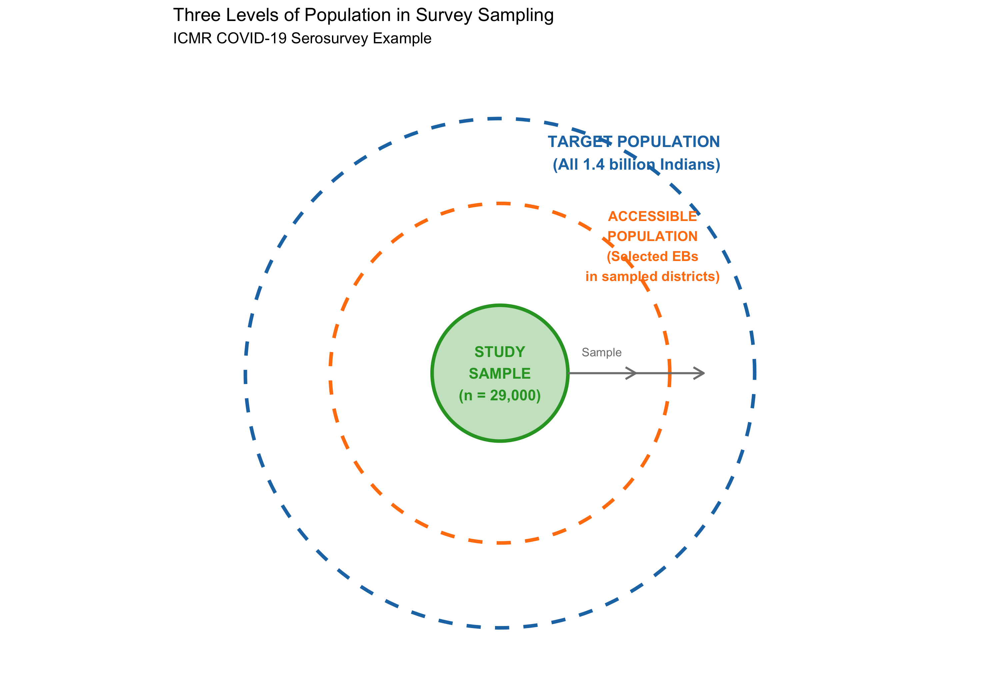
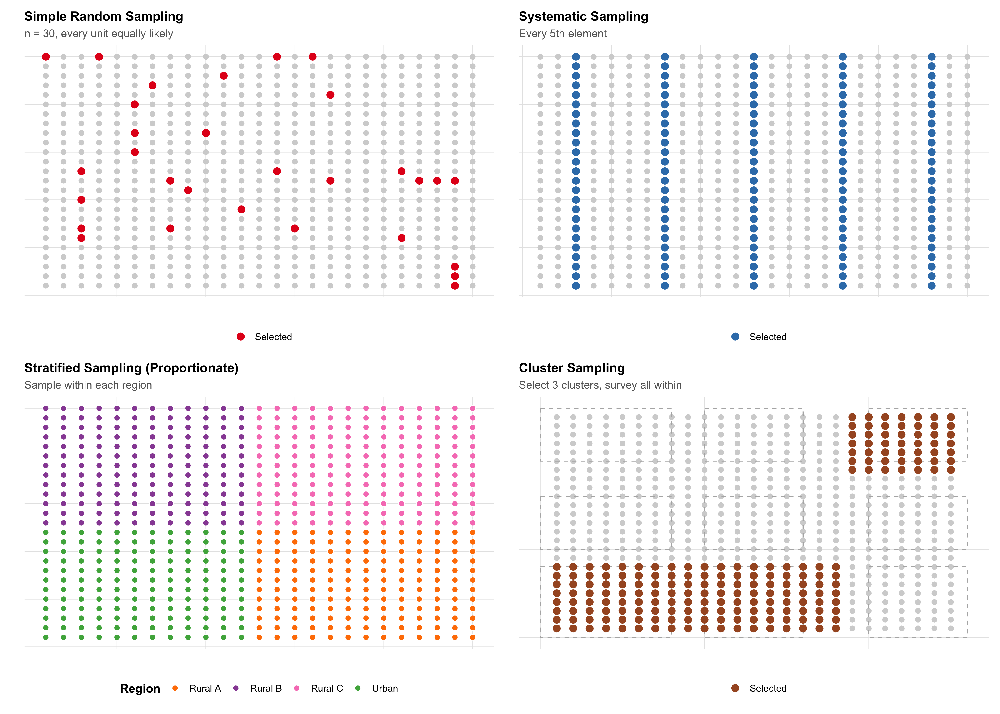
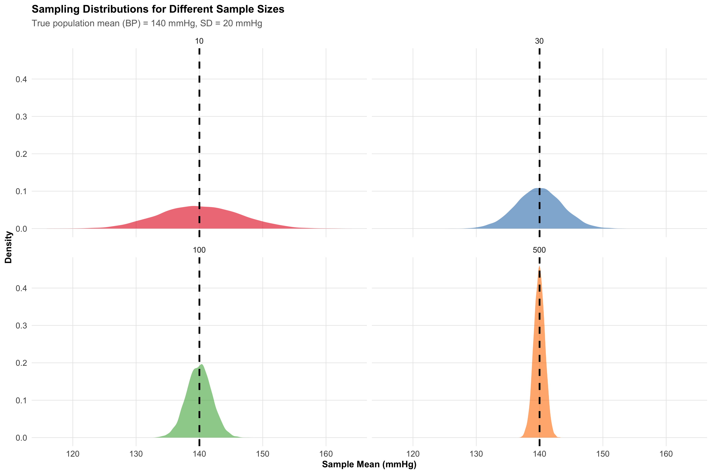
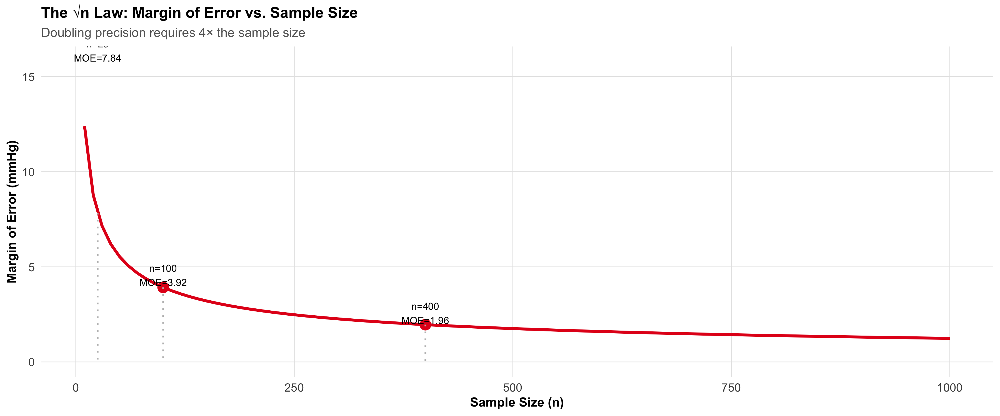
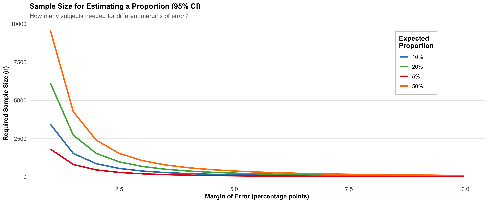
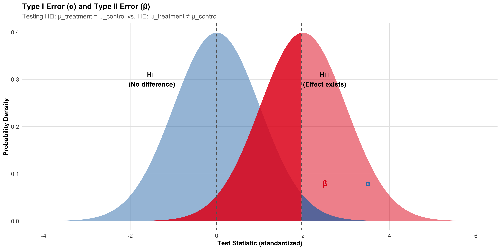
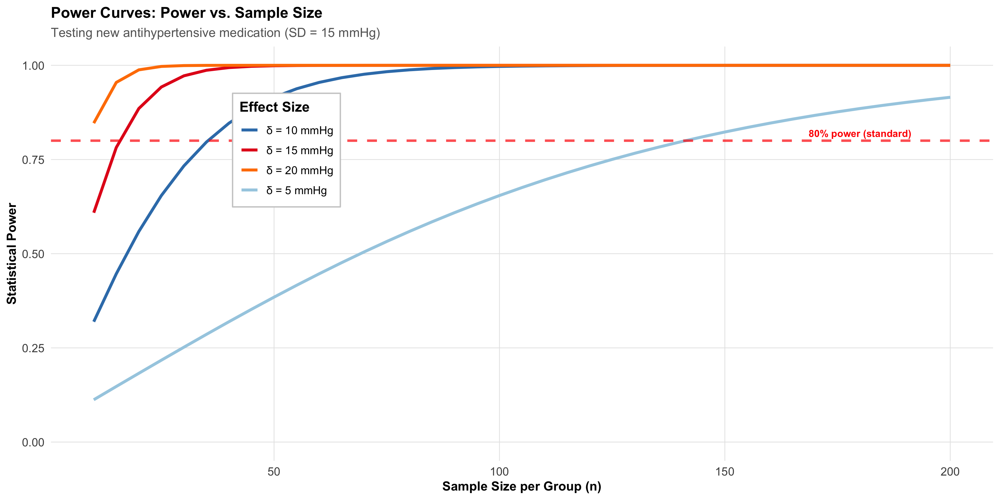
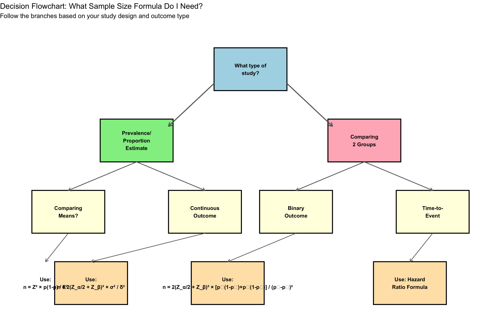
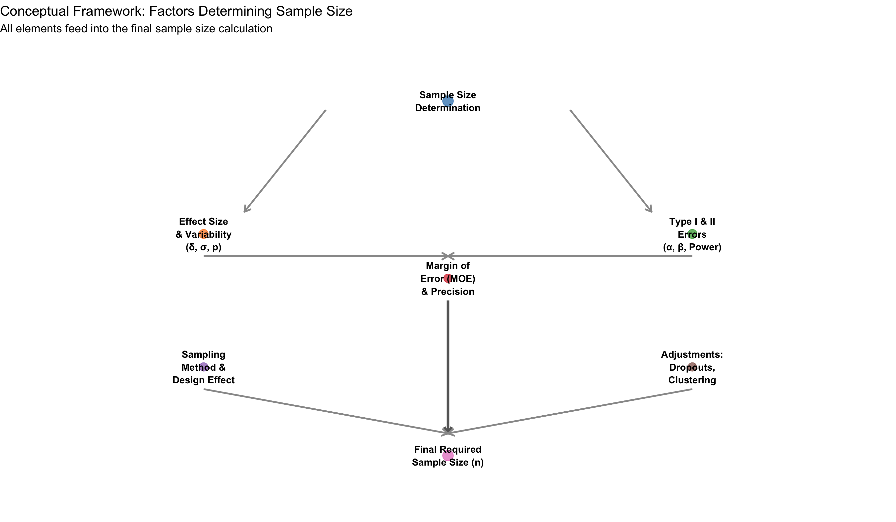

7 Sampling Methods and Sample Size
From Population to Sample — How Many and Who?
Sampling Methods
Sample Size
Study Planning
7.1 Hook: Sampling 1.4 Billion People
In 2020, the Indian Council of Medical Research (ICMR) launched a national seroprevalence survey for COVID-19 antibodies. The challenge: estimate the proportion of India’s 1.4 billion people who had been exposed to SARS-CoV-2. The solution: test approximately 29,000 strategically sampled individuals across all 28 states and 8 union territories.
How could such a small sample (29,000 out of 1,400,000,000—a ratio of 1 in 48,000) possibly represent the entire nation? The answer lies in two fundamental questions:
- Who to sample? (sampling methods and design)
- How many to sample? (sample size determination)
Similarly, the National Family Health Survey (NFHS) estimates health and fertility indicators for all of India by surveying approximately 600,000 households in Rounds 5-5.1. This module explores the principles that make such sampling feasible and statistically valid.
7.2 Part 1: Population, Sample, and Sampling Frame
Before calculating how many people to include in a study, we must first clarify who we are studying and whom we can actually reach.
The Three Levels of Population
When designing a study, researchers encounter three nested populations:
Target Population (Theoretical Population): The entire group to which we wish to generalize our results. For the ICMR COVID serosurvey, this was all residents of India. For the Framingham Heart Study (often cited as a reference), the target population was all Americans, though the actual study was much more restricted.
Accessible Population (Practical Population): The group actually available for sampling, given practical constraints. For ICMR, this included persons living in selected enumeration blocks (EBs) in sampled villages/wards. It excluded people in institutions (prisons, military barracks), homeless persons, and very remote areas—not because they’re unimportant, but because they’re inaccessible with available resources and logistics.
Study Sample: The actual individuals selected for the study. ICMR tested 29,000 persons; these became the study sample.
Frame Bias: When the accessible population differs systematically from the target population, results may not generalize. NFHS uses household listings, which miss homeless populations, long-distance migrants, and institutionalized persons—a small but real source of bias if studying characteristics linked to housing insecurity or institutional status.
The Sampling Frame
The sampling frame is the actual list or population from which we draw our sample. It is not abstract—it is concrete and operational.
Examples: - For NFHS: a list of all enumeration blocks (EBs) within selected districts, then a list of all households within selected EBs. - For an outpatient diabetes screening study: the clinic’s appointment list for a given month. - For a community survey of nutritional status: a list of all villages or wards in the district.
The quality of the sampling frame directly affects sample quality. If the frame is incomplete or inaccurate (missing villages, double-listed households), the resulting sample will be biased.
Visualizing the Three-Tier Structure
7.3 Part 2: Probability Sampling Methods
Probability sampling methods are techniques where every member of the population has a known, non-zero probability of being selected. This foundation enables valid statistical inference—confidence intervals, hypothesis tests, and generalizations to the population.
Simple Random Sampling (SRS)
In Simple Random Sampling, every possible sample of size n has an equal chance of being selected. Conceptually simple but logistically challenging for large populations.
Methods: 1. Lottery method (physically draw names from an urn) 2. Random number table (assign each person a number, use a table of random digits) 3. Computer-generated random numbers (modern standard)
Example: To select 100 patients from a hospital’s diabetic registry of 5,000, assign each a number (1–5000) and use a computer to generate 100 random integers without replacement.
Advantages: Unbiased; no assumptions about population structure; straightforward statistical analysis.
Disadvantages: Requires a complete sampling frame; may miss rare subgroups; expensive for geographically scattered populations (travel costs).
Systematic Sampling
In Systematic Sampling, you select every k-th element from an ordered list, where k = N/n (population size divided by desired sample size).
Procedure: 1. Divide population size N by desired sample size n to get the interval k. 2. Randomly select a starting point between 1 and k. 3. Select every k-th element thereafter.
Example: To sample 200 patients from a clinic’s OPD attendance list of 10,000, set k = 10,000/200 = 50. Randomly pick a starting number between 1–50 (say, 23), then select patients 23, 73, 123, 173, …
Advantages: Simpler than SRS; good for administrative lists; more efficient (less random variation if list is randomized).
Disadvantages: Risk of periodicity—if the list has a hidden repeating pattern that coincides with k, the sample becomes biased. For example, if every 50th patient is a follow-up (and k=50), you’ll oversample follow-ups or miss new patients.
Confusing systematic with stratified: Systematic sampling takes every k-th person regardless of characteristics; stratified sampling first divides the population into groups (strata) then samples within each group intentionally.
Stratified Sampling
In Stratified Sampling, the population is first divided into non-overlapping subgroups (strata) based on a variable relevant to the study outcome. Then, a separate sample is drawn from each stratum.
Example: The National Family Health Survey (NFHS) stratifies by state, then by rural/urban within each state, ensuring adequate representation of rural areas and all states.
Procedure: 1. Identify strata (e.g., age groups: 18–30, 31–45, 46–60, 60+). 2. Determine the size of each stratum in the population. 3. Decide sampling fraction: proportionate (sample size in each stratum ∝ stratum size) or disproportionate (oversample rare or important strata).
Example calculation: - Target population: 10,000 adults in Bhopal - Age structure: 18–30 (3000), 31–45 (3500), 46–60 (2000), 60+ (1500) - Desired sample: n = 500 - Proportionate allocation: - 18–30: 500 × (3000/10000) = 150 - 31–45: 500 × (3500/10000) = 175 - 46–60: 500 × (2000/10000) = 100 - 60+: 500 × (1500/10000) = 75
Advantages: Ensures representation of important subgroups; reduces sampling error compared to SRS for heterogeneous populations; enables subgroup analysis.
Disadvantages: Requires knowledge of population structure; disproportionate allocation requires statistical adjustment (weighting) in analysis.
Cluster Sampling
In Cluster Sampling, the population is divided into clusters (naturally occurring groups like villages, schools, or PHCs), a sample of clusters is selected, and all (or part) of each selected cluster is surveyed.
Example: Instead of traveling to 200 scattered households across Madhya Pradesh, the NFHS selects 50 villages (clusters), then surveys all 4 households in selected villages—far more cost-effective.
Advantages: Practical for geographically dispersed populations; administrative convenience; cost-effective.
Disadvantages: Less statistically efficient than SRS (higher sampling error); members within a cluster tend to be similar (intracluster correlation, ρ or rho), reducing effective information per person.
Design Effect: The design effect (DE) quantifies the loss of efficiency due to clustering:
\[\text{Design Effect (DE)} = 1 + (m - 1) \rho\]
where: - m = cluster size (number of units per cluster) - ρ (rho) = intracluster correlation (measure of within-cluster similarity)
Example: NFHS typically uses m = 4 (4 households per cluster) and ρ ≈ 0.05 for many health outcomes. \[\text{DE} = 1 + (4 - 1) \times 0.05 = 1 + 0.15 = 1.15\]
This means cluster sampling requires 15% more participants than SRS to achieve the same precision.
Multi-Stage Sampling
Multi-stage sampling combines multiple sampling methods in sequence. The NFHS employs this:
NFHS-5 Sampling Strategy (Simplified): 1. Stage 1: Stratify states by rural/urban; divide each stratum into districts. 2. Stage 1: Randomly select districts (cluster sampling at state level). 3. Stage 2: Within selected districts, stratify by rural/urban blocks; randomly select blocks. 4. Stage 3: Within selected blocks, randomly select villages (Stage 1 in the block is cluster sampling). 5. Stage 4: Within selected villages, list all households; randomly select a fixed number per village (typically 4–10).
This design balances representation (stratification) with cost efficiency (clustering).
Visualizing Probability Sampling Methods

7.4 Part 3: Non-Probability Sampling
Non-probability sampling methods do not use random selection. Every member of the population does not have a known, non-zero probability of being selected. While useful for certain contexts, they cannot support valid statistical inference to the population.
Convenience Sampling
In convenience sampling, participants are selected based on accessibility and availability.
Example: A hospital initiates a study of antibiotic prescribing patterns by collecting data from patients who visit the OPD on the day the researcher is present. Weekend and holiday patients are excluded simply because the researcher wasn’t there.
Advantages: Inexpensive; quick; useful for pilot studies.
Disadvantages: Highly prone to selection bias; results cannot be generalized to the population; inference is invalid.
Purposive (Judgmental) Sampling
The researcher intentionally selects participants believed to be “typical” or “representative.”
Example: Selecting three “typical” villages in a district to study community health worker performance. The researcher judges which villages best represent the district’s average characteristics.
Advantages: May capture diversity in exploratory research; useful for qualitative studies.
Disadvantages: Researcher bias; no statistical guarantee of representativeness; cannot support formal inference.
Snowball Sampling
Participants recruit other participants, forming a chain. Useful for hidden or hard-to-reach populations.
Example: A study of health risks among sex workers might start with one community health worker’s contact, who introduces another sex worker, and so on.
Advantages: Reaches hidden populations; builds trust; cost-effective for rare groups.
Disadvantages: Strong selection bias (participants refer similar others); cannot estimate population parameters; violates random sampling assumption.
Studying Stigmatized Groups: Research on substance use disorder, HIV status, or sex work often relies on snowball sampling because members of these populations may distrust formal institutions. While the sample is biased, qualitative insights about lived experiences remain valuable. However, claims about population prevalence require probability sampling.
Quota Sampling
The population is divided into subgroups (quotas); a non-random sample meeting quota specifications is selected.
Example: “Interview 200 patients: 50 from each age group (18–30, 31–45, 46–60, 60+) and ensure 100 males and 100 females.” The researcher decides which individuals to interview within these quotas.
Advantages: Ensures representation of subgroups; faster than stratified sampling.
Disadvantages: Non-random selection within quotas introduces bias; intragroup selection depends on researcher judgment; inference is invalid.
When Non-Probability Methods Are Acceptable
- Qualitative Research: Understanding lived experience, generating hypotheses, building theory.
- Pilot Studies: Testing feasibility of recruitment, data collection procedures, or measurement instruments.
- Rare Populations: When a sampling frame doesn’t exist (e.g., undocumented migrants) and ethical community engagement is paramount.
- Descriptive Reporting: Documenting clinical observations without inferential claims (e.g., case reports).
Critical caveat: Non-probability sampling cannot support statements like “X% of the population has condition Y” or statistical hypothesis tests. It can support “We observed X in this group” or “This is a possible mechanism.”
7.5 Part 4: Sampling Error and Sample Size — The Connection
All samples vary. If we drew different random samples from the same population, we’d get different estimates (different sample means, different proportions). This variation is sampling error—not a mistake, but an inevitable consequence of sampling.
Understanding Sampling Error
Population parameter: The true value in the entire population (e.g., true mean blood pressure in all Indian adults = μ).
Sample statistic: The value computed from a sample (e.g., mean BP in our sample of n = 500).
Sampling error: The difference between the sample statistic and the population parameter: \[\text{Sampling Error} = \text{Sample Statistic} - \text{Population Parameter}\]
Sampling error is random and typically follows a normal distribution (by the Central Limit Theorem).
The Standard Error
The standard error (SE) is the standard deviation of the sampling distribution. It quantifies typical sampling error.
For a sample mean: \[\text{SE} = \frac{\sigma}{\sqrt{n}}\]
where: - σ = population standard deviation - n = sample size
For a sample proportion: \[\text{SE} = \sqrt{\frac{p(1-p)}{n}}\]
where: - p = population proportion - n = sample size
Key insight: As n increases, SE decreases proportionally to 1/√n. To halve the SE, you need to quadruple the sample size (the √n law).
Visualizing Sampling Distributions

Interpretation: - n = 10: Wide spread (SE ≈ 6.3). Sample means range from ~120 to ~160 mmHg. - n = 30: Narrower (SE ≈ 3.7). - n = 100: Even narrower (SE ≈ 2.0). - n = 500: Very tight (SE ≈ 0.9).
Larger samples give more precise estimates (narrower confidence intervals).
The Margin of Error
The margin of error (MOE) is the half-width of a confidence interval:
\[\text{MOE} = Z_{\alpha/2} \times \text{SE}\]
For 95% confidence (α = 0.05), Z_α/2 = 1.96: \[\text{MOE} = 1.96 \times \frac{\sigma}{\sqrt{n}}\]
Example: A study estimates mean hemoglobin in Indian women to be 11.5 g/dL with SE = 0.2. The 95% CI is: \[11.5 \pm 1.96 \times 0.2 = 11.5 \pm 0.39 = [11.11, 11.89] \text{ g/dL}\]
The margin of error is 0.39 g/dL.
The √n Law in Action

7.6 Part 5: Sample Size for Estimating a Proportion
One of the most common sample size problems: How many subjects do I need to estimate a population proportion with a specified precision?
Example Scenario: The district health officer wants to estimate the prevalence of type-2 diabetes in adult residents of Bhopal. From previous studies, diabetes prevalence in similar Indian urban populations is about 10%. The health officer wants a 95% confidence interval with a margin of error of ±2 percentage points.
The Formula
\[n = \frac{Z_{\alpha/2}^2 \times p(1-p)}{E^2}\]
where: - Z_α/2 = critical value (1.96 for 95% CI, 2.576 for 99% CI) - p = expected population proportion - E = desired margin of error (as a decimal) - n = required sample size
Worked Example: Diabetes Prevalence in Bhopal
Specifications: - Expected prevalence (p) = 0.10 (10%) - Desired margin of error (E) = 0.02 (±2 percentage points) - Confidence level = 95% (Z_α/2 = 1.96)
Calculation: \[n = \frac{(1.96)^2 \times 0.10 \times (1 - 0.10)}{(0.02)^2}\] \[n = \frac{3.8416 \times 0.10 \times 0.90}{0.0004}\] \[n = \frac{0.3457}{0.0004} = 864\]
We need n = 864 subjects to estimate diabetes prevalence within ±2 percentage points.

What If p Is Unknown?
When no prior data exist, use p = 0.50, which maximizes p(1-p) and gives the most conservative (largest) sample size:
Conservative Calculation: \[n = \frac{(1.96)^2 \times 0.50 \times 0.50}{(0.02)^2} = \frac{0.9604}{0.0004} = 2401\]
With no prior knowledge, we’d need 2401 subjects—much larger than the 864 if we knew p ≈ 0.10.
Finite Population Correction (FPC)
If the sample represents a substantial fraction of the population (typically >5%), apply the finite population correction:
\[n_{\text{adjusted}} = \frac{n}{1 + \frac{n}{N}}\]
where: - n = sample size (from formula above) - N = total population size
Example: If the urban population of Bhopal is 1,500,000 and n = 864: \[n_{\text{adjusted}} = \frac{864}{1 + 864/1,500,000} = \frac{864}{1.000576} ≈ 863\]
The adjustment is negligible (n/N = 0.058%, far from 5%). FPC is mainly relevant for small populations (e.g., all residents of a small village).
7.7 Part 6: Sample Size for Comparing Two Groups
Comparing two treatment groups (e.g., new drug vs. standard) or two populations requires four ingredients:
- Type I error (α): Usually 0.05 (5% chance of falsely rejecting a true null hypothesis)
-
Type II error (β): Usually 0.20 (20% chance of failing to detect a true effect)
- Power = 1 - β = 0.80 (80% chance of detecting the effect if it exists)
- Effect size (δ or Δ): The clinical difference you want to detect
- Variability (σ or SD): Population standard deviation (or assumed SD from prior studies)
Type I and Type II Errors
Visualizing these errors helps understanding:

Type I Error (α): Rejecting H₀ when it’s true. The shaded blue area on the right (beyond Z_crit) represents α. Smaller α means stricter evidence needed (e.g., α = 0.01 is stricter than α = 0.05).
Type II Error (β): Failing to reject H₀ when H₁ is true. The shaded red area on the left (below Z_crit) represents β.
Power (1 - β): The ability to detect a true effect. Higher power is better. Standard is 80% power (β = 0.20).
Why 80% power? This reflects a 4:1 trade-off: a Type II error is often considered 4 times less serious than a Type I error (failing to detect a true treatment is less bad than claiming a false effect). 80% power balances practical feasibility against statistical sensitivity.
Sample Size for Comparing Two Means
Scenario: Testing whether a new antihypertensive medication reduces systolic BP more than standard therapy.
Specifications: - Standard therapy: mean BP reduction = 10 mmHg - New therapy: expected mean BP reduction = 20 mmHg - Difference to detect (δ) = 20 - 10 = 10 mmHg - Assumed SD in each group = 15 mmHg - Two-tailed α = 0.05 (Z_α/2 = 1.96) - Power = 0.80 (β = 0.20, Z_β = 0.84)
\[n_{\text{per group}} = \frac{2(Z_{\alpha/2} + Z_\beta)^2 \times \sigma^2}{\delta^2}\]
where: - Z_α/2 = 1.96 (two-tailed, α = 0.05) - Z_β = 0.84 (β = 0.20, power = 0.80) - σ = common SD in both groups - δ = difference to detect
Calculation: \[n_{\text{per group}} = \frac{2 \times (1.96 + 0.84)^2 \times 15^2}{10^2}\] \[n_{\text{per group}} = \frac{2 \times (2.80)^2 \times 225}{100}\] \[n_{\text{per group}} = \frac{2 \times 7.84 \times 225}{100} = \frac{3528}{100} = 35.28 ≈ 36\]
We need n = 36 per group (total n = 72) to detect a 10 mmHg difference with 80% power at α = 0.05.
Sample Size for Comparing Two Proportions
Scenario: Comparing cure rates of two TB regimens.
Specifications: - Standard regimen: cure rate p₁ = 0.70 (70%) - New regimen: expected cure rate p₂ = 0.85 (85%) - Two-tailed α = 0.05 - Power = 0.80
The formula is more complex but follows the same logic:
\[n_{\text{per group}} = \frac{2 \times (Z_{\alpha/2} + Z_\beta)^2 \times [p_1(1-p_1) + p_2(1-p_2)]}{(p_2 - p_1)^2}\]
Calculation (worked out step-by-step):
Sample Size Calculation for TB Cure Rate Comparison=====================================================Standard regimen cure rate (p₁) = 70.0%New regimen cure rate (p₂) = 85.0%Difference to detect = 15.0%Z_α/2 (two-tailed, α=0.05) = 1.96Z_β (power=0.80, β=0.20) = 0.84
Numerator = 2 × (2.80)² × [0.2100 + 0.1275] = 5.2920Denominator = (0.15)² = 0.0225
n per group = 5.2920 / 0.0225 = 235.20 ≈ 236Total n = 472We need n ≈ 91 per group (total n ≈ 182) to detect a 15 percentage point difference in cure rates with 80% power.
Power Curves: How Power Varies with Sample Size

Interpretation: - Larger effect size (δ): Requires fewer subjects to achieve 80% power. Detecting a 20 mmHg difference needs ~n=28 per group, while a 5 mmHg difference needs ~n=180 per group. - Smaller effect size: Requires larger sample size but is more clinically relevant and general.
7.8 Part 7: Adjustments and Practical Considerations
Real-world studies never proceed perfectly. Researchers must adjust for dropouts, clustering, and multiple comparisons.
Adjusting for Expected Dropouts
If you expect a dropout rate (e.g., 20% of subjects lost to follow-up), increase the sample size:
\[n_{\text{adjusted}} = \frac{n}{1 - \text{dropout rate}}\]
Example: If the TB study calculated n = 91 per group but expects 15% dropout: \[n_{\text{adjusted}} = \frac{91}{1 - 0.15} = \frac{91}{0.85} ≈ 107 \text{ per group}\]
Recruit 107 per group expecting ~16 dropouts, leaving ~91 for analysis.
Design Effect for Cluster Randomization
In cluster-randomized trials (e.g., randomizing PHCs, not individual patients), the design effect inflates sample size:
\[n_{\text{cluster-adjusted}} = n \times \text{DE} = n \times [1 + (m - 1) \rho]\]
where: - n = sample size from simple randomization - m = cluster size (e.g., 4 patients per PHC) - ρ = intracluster correlation
Example - Cluster-Randomized Antihypertensive Trial:
Suppose we want to compare two antihypertensive regimens but randomize at the PHC level (not individual patients) to avoid contamination.
- Individual-level sample size (if could randomize patients): n = 36 per group
- Cluster size: m = 12 patients per selected PHC
- Intracluster correlation for BP: ρ = 0.02
- Design effect: DE = 1 + (12 - 1) × 0.02 = 1 + 0.22 = 1.22
\[n_{\text{clusters adjusted}} = 36 \times 1.22 = 44 \text{ per group}\]
If each PHC enrolls 12 patients, we need 44 / 12 ≈ 4 PHCs per group (7-8 PHCs total).
Forgetting the design effect: Analyzing cluster data as if it were individually randomized leads to overstated statistical significance (confidence intervals too narrow, p-values too small).
One-Sided vs. Two-Sided Tests
Most sample size calculations assume two-sided tests (α = 0.05 split as 0.025 in each tail, Z_α/2 = 1.96). If you’re certain the effect, if it exists, can only go in one direction, a one-sided test (α = 0.05 entirely in one tail, Z_α = 1.645) requires fewer subjects.
One-sided example: If testing whether a new vaccine increases antibody response (it cannot decrease or stay the same), a one-sided test is justified: \[n_{\text{one-sided}} = n_{\text{two-sided}} \times \frac{Z_{1.645}^2}{Z_{1.96}^2} ≈ 0.85 \times n_{\text{two-sided}}\]
Caveat: One-sided tests are controversial in clinical trials. Reviewers often demand two-sided tests to guard against unexpected direction of effects.
Multiple Comparisons
If testing multiple hypotheses (e.g., three different TB regimens compared pairwise), the probability of at least one false positive increases. A brief mention:
Bonferroni correction: Divide α by the number of comparisons. For 3 pairwise comparisons, α_adjusted = 0.05/3 = 0.017. This is conservative and may require larger sample sizes.
Better approach: Pre-specify a primary hypothesis and analyze others as secondary/exploratory.
7.9 Part 8: Putting It All Together — Indian Scenarios
Scenario 1: Replicating NFHS Sampling Strategy
Context: The National Family Health Survey (NFHS) is India’s largest household survey, collecting data on fertility, mortality, health behaviors, and nutrition.
Design: Multi-stage stratified cluster sampling 1. Stratum 1: State level; stratify by rural/urban within each state. 2. Stage 1 Cluster Sampling: Within each stratum, randomly select districts (clusters). 3. Stage 2 Stratification: Within selected districts, divide into rural blocks and urban wards. 4. Stage 2 Cluster Sampling: Randomly select villages from rural blocks and wards from urban areas. 5. Stage 3: List all households; randomly select a fixed number (e.g., 20–30) per village/ward. 6. Stage 4: Within each household, list eligible respondents; randomly select women and men for individual interviews.
Why this design? - Stratification: Ensures representation of all states and rural/urban areas. - Clustering: Reduces travel costs by concentrating samples geographically. - Multi-stage: Balances representation (stratified) with feasibility (clustered).
Sample size: NFHS-5 sampled ~600,000 households, yielding ~670,000 women interviews and ~210,000 men interviews across all of India. This large sample allows district-level estimates for all 28 states.
Scenario 2: Planning a District-Level Diabetes Prevalence Survey
Objective: Estimate the prevalence of type-2 diabetes (fasting glucose ≥126 mg/dL or on medication) in all adults ≥20 years in Indore district.
Study Design: 1. Target population: All adults ≥20 years living in Indore district (population ~2 million). 2. Sampling method: Stratified cluster sampling. - Stratify by urban/rural (Indore city vs. surrounding villages). - Cluster: villages (rural) and wards (urban). - Sample: 50 clusters (30 rural, 20 urban), 20 adults per cluster → n = 1000. 3. Expected prevalence: p = 0.12 (12%, based on prior urban studies). 4. Desired margin of error: E = 0.03 (±3 percentage points). 5. Confidence level: 95% (Z = 1.96).
Sample size calculation (simple random): \[n = \frac{(1.96)^2 \times 0.12 \times 0.88}{(0.03)^2} = \frac{0.4129}{0.0009} ≈ 459\]
Adjustments: - Cluster sampling design effect: DE ≈ 1.15 (cluster size m = 20, ρ = 0.05). \[n_{\text{adjusted}} = 459 \times 1.15 ≈ 528\] - Expected non-response rate: 10%. \[n_{\text{final}} = \frac{528}{1 - 0.10} ≈ 587\] - Round to practical number: n = 600 subjects (30 clusters × 20 subjects/cluster).
Analysis: Report overall prevalence with 95% CI; conduct subgroup analyses by age and urban/rural residence; use survey methods (accounting for design effect) in statistical tests.
Scenario 3: Designing an RCT for Iron Supplementation in Pregnancy
Objective: Test whether enhanced iron supplementation (60 mg elemental iron daily) reduces maternal anemia (hemoglobin <11 g/dL at delivery) compared to standard supplementation (30 mg daily).
Key specifications: - Primary outcome: Maternal anemia at delivery (binary). - Standard regimen: Expected anemia rate = 35%. - Enhanced regimen: Expected anemia rate = 25%. - Difference to detect: 10 percentage points. - α = 0.05 (two-tailed), Power = 0.80.
Sample size calculation: \[n_{\text{per group}} = \frac{2 \times (1.96 + 0.84)^2 \times [0.35 \times 0.65 + 0.25 \times 0.75]}{(0.25 - 0.35)^2}\] \[= \frac{2 \times 7.84 \times [0.2275 + 0.1875]}{0.01}\] \[= \frac{15.68 \times 0.4150}{0.01} = \frac{6.5072}{0.01} ≈ 651\]
Adjustments: - Expected dropout rate: 15% (pregnancy-related reasons). \[n_{\text{adjusted}} = \frac{651}{1 - 0.15} ≈ 765 \text{ per group}\] - Total n = 1530 (765 standard, 765 enhanced).
Design considerations: - Setting: 15 primary health centers (PHCs) across urban and rural Indore; ~51 subjects per PHC. - Randomization: Individual-level randomization (not cluster), given PHCs likely have minimal contamination risk. - Blinding: Double-blind (pregnant women and clinical staff); placebo tablets matched in appearance. - Analysis: Intention-to-treat; stratified by study site and baseline hemoglobin level.
Scenario 4: Sample Size for a Pilot Study
Objective: Pilot test a mobile health (mHealth) intervention for maternal nutrition education.
Approach: Small pilot study (no formal hypothesis test) to assess: - Feasibility of enrollment and retention - Quality of data collection - Preliminary effect size estimates
Target: n = 50–100 (25–50 per arm). No formal power calculation; the goal is descriptive and developmental, not confirmatory.
Rationale: - Large enough to observe trends and variability. - Small enough to be manageable and quick. - Informs sample size for future full-scale RCT. - Non-probability sampling is acceptable: recruit willing participants from 2–3 PHCs.
Decision Flowchart

7.10 Summary Table: Sampling Methods
| Method | Type | How | Pros | Cons |
|---|---|---|---|---|
| Simple Random | Probability | Random draw | Unbiased; simple | Requires frame; expensive (scattered) |
| Systematic | Probability | Every kth element | Efficient if list ordered | Risk of periodicity |
| Stratified | Probability | Sample within groups | Represents subgroups; precise | Need population structure |
| Cluster | Probability | Random clusters, all within | Cost-effective; practical | Higher error; intracluster corr. |
| Multi-stage | Probability | Combine stratification & clustering | Flexible; balanced | More complex; design effects |
| Convenience | Non-prob. | Available/convenient subjects | Quick; cheap | Biased; invalid inference |
| Purposive | Non-prob. | Researcher selects 'typical' units | Capture diversity | Subjective; biased |
| Snowball | Non-prob. | Participants refer others | Reach hidden populations | High selection bias |
| Quota | Non-prob. | Fill quotas for subgroups | Ensure subgroup representation | Non-random within quotas |
7.11 Summary Table: Sample Size Formulas
| Scenario | Formula | Key Parameters |
|---|---|---|
| Estimate proportion | n = Z²_α/2 × p(1-p) / E² | p, E, α |
| Estimate mean | n = Z²_α/2 × σ² / E² | σ, E, α |
| Compare 2 proportions | n/group = 2(Z_α/2 + Z_β)² × [p₁(1-p₁) + p₂(1-p₂)] / (p₂ - p₁)² | p₁, p₂, α, power |
| Compare 2 means | n/group = 2(Z_α/2 + Z_β)² × σ² / δ² | σ, δ, α, power |
| Account for dropouts | n_adj = n / (1 - dropout rate) | dropout % |
| Account for clustering | n_adj = n × [1 + (m-1)ρ] | cluster size m, intracluster corr. ρ |
7.12 Summary Diagram: Relationship of Key Sample Size Concepts

7.13 Key Concepts and Formulas Summary
Population vs. Sample: The population is the entire group of interest (often too large or costly to study completely). A sample is a subset, carefully chosen to represent the population. Valid inference requires a representative sample, usually obtained via probability sampling.
Sampling Error (Not Avoidable): Even with perfect methodology, sample statistics vary from population parameters. Sampling error decreases with larger sample sizes (proportional to 1/√n). Report confidence intervals to quantify uncertainty.
Design Effect: In cluster sampling, members of the same cluster tend to be more similar than random pairs. This correlation (ρ) inflates variance, requiring larger sample sizes. Design effect = 1 + (m-1)ρ inflates the required n by this factor.
Power vs. Sample Size Trade-off: Larger samples increase power (ability to detect effects). Standard power = 80% reflects a practical balance. Smaller effects require larger samples; larger effects require smaller samples.
7.14 Self-Check Questions
Before proceeding to MCQs, reflect on these questions:
- Population identification: In the NFHS, what is the target population, and what populations might be missed (frame bias)?
- Sampling method choice: For a multi-district prevalence survey, why is stratified cluster sampling preferable to simple random sampling?
- Sampling error: If a sample mean is 140 mmHg and the population mean is 138 mmHg, is the difference “sampling error”? What would you compute to estimate typical sampling error?
- Sample size: A researcher wants to estimate diabetes prevalence (expected p = 0.10) with a margin of error of ±3 percentage points (95% CI). Calculate required n.
- Effect size: In comparing two antihypertensive drugs, why is the effect size (δ) critical? What happens if δ is smaller than expected?
- Dropouts: An RCT calculates n = 100 per group but expects 20% dropout. What adjusted sample size should be recruited?
7.15 Practice MCQs: NEET PG Level
Q1. A study aims to estimate hypertension prevalence in urban Bangalore (population ~10 million). Which sampling method best balances representation with cost efficiency?
Q2. A researcher wants to estimate anemia prevalence (expected p = 0.25) in rural UP with margin of error ±4 percentage points at 95% confidence. What is the minimum sample size (ignoring design effects)?
Q3. If the margin of error is halved (doubled precision), what happens to the required sample size?
Q4. A cluster-randomized trial uses cluster size m = 20 and intracluster correlation ρ = 0.05. If individual-level calculation suggests n = 200 per group, what is the design-effect-adjusted sample size?
Q5. In a two-group comparison, α = 0.05 and power = 0.80. Which statement is correct?
Q6. A power curve shows n = 45 per group is needed to detect a 15 mmHg BP difference (power = 0.80). If the true difference is only 10 mmHg, what happens?
Q7. An RCT calculates n = 80 per group but anticipates 25% dropout. What should be the recruitment target?
7.16 Further Learning
Recommended StatQuest Videos: - StatQuest: Sample Size and Power — Intuitive explanation of sample size determination. - StatQuest: P-Values and Statistical Significance — Understanding α and hypothesis testing.
Textbook References: - Keller, G. (2014). Statistics for Management and Economics (10th ed.). Cengage. — Chapter on sampling and sample size. - Polit, D. F., & Beck, C. T. (2021). Nursing Research: Generating and Assessing Evidence for Nursing Practice (10th ed.). Wolters Kluwer. — Excellent coverage of sampling designs in health research.
Indian Context Resources: - NFHS-5 Final Report: Ministry of Health and Family Welfare (2021). Available at https://dhsprogram.com/. Detailed description of NFHS sampling methodology across Indian states. - ICMR Serosurvey Protocol: Indian Council of Medical Research (2020). “ICMR COVID-19 Serosurvey — Methodological Protocol.” Provides practical example of nationwide probability sampling in Indian context. - Central Bureau of Health Intelligence (CBHI) Publications: Government of India resources on health survey methodologies.
Key Concepts to Revisit: - Distinguish between probability and non-probability sampling; know when each is appropriate. - Understand that sampling error is unavoidable and quantifiable (via standard error and confidence intervals). - Master the relationship between effect size, power, variability, and sample size. - Always account for dropouts and design effects in real-world studies. - For Indian public health contexts, stratified cluster sampling is the most common and practical method.
7.17 Clinical Vignette: Translating Sample Size into Practice
Scenario: You are a district epidemiologist in Madhya Pradesh tasked with planning a survey to estimate the prevalence of undernutrition among children 6–59 months in your district (population ~500,000).
Step 1: Define objectives and parameters - Expected prevalence (moderate-to-severe stunting): p = 0.40 (40%, based on recent NFHS-5 data for Madhya Pradesh). - Desired margin of error: E = 0.05 (±5 percentage points). - Confidence level: 95% (Z_α/2 = 1.96).
Step 2: Calculate initial sample size \[n = \frac{(1.96)^2 \times 0.40 \times 0.60}{(0.05)^2} = \frac{0.9216}{0.0025} ≈ 369\]
Step 3: Account for design effect - Sampling method: stratified cluster sampling (stratify by rural/urban, cluster by village). - Cluster size: m = 30 children per village. - Intracluster correlation (for nutritional status): ρ = 0.05. - Design effect: DE = 1 + (30-1) × 0.05 = 2.45.
\[n_{\text{design-adjusted}} = 369 \times 2.45 ≈ 904\]
Step 4: Account for non-response - Expected non-response (refusal, migration, unavailability): 15%.
\[n_{\text{final}} = \frac{904}{1 - 0.15} = \frac{904}{0.85} ≈ 1064\]
Step 5: Translate to operational numbers - Target sample: n = 1064 children 6–59 months. - Number of clusters (villages): 1064 / 30 ≈ 36 villages. - Sampling allocation: - Stratify by rural (70%) and urban (30%): 25 rural villages, 11 urban wards. - Recruit ~30 children per location.
Step 6: Implementation - Months 1–2: Finalize list of all villages and urban wards in district; stratify by rural/urban and administrative block. - Months 2–3: Randomly select 25 rural villages and 11 urban wards using computer-generated random numbers. - Months 3–8: Field teams visit each location, list all children 6–59 months in the first 30 households, measure height and weight, administer dietary recall. - Months 8–9: Data entry, analysis, report writing. - Analysis: Use survey-weighted methods (accounting for stratification and clustering) to report district-level prevalence with 95% confidence intervals and sub-group analysis by rural/urban.
This structured approach transforms abstract sample size calculations into a practical, feasible study protocol.
Note
Chapter Highlights: - Probability sampling (SRS, systematic, stratified, cluster, multi-stage) enables valid inference; non-probability methods do not. - Sampling error is unavoidable; quantify it via standard error and confidence intervals. - Sample size determination balances precision (margin of error), power (ability to detect effects), and practical constraints (cost, logistics, dropouts). - For Indian surveys: stratified cluster sampling is standard (NFHS, district health surveys); always account for design effect. - Use formulas provided and context-specific parameters (effect size, variability) to calculate n; adjust for clustering and dropouts.
End of Module 6: Sampling Methods and Sample Size